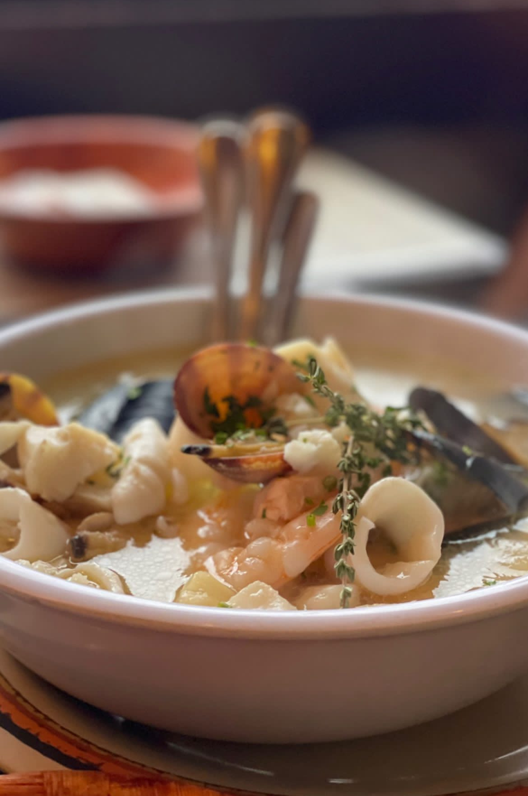
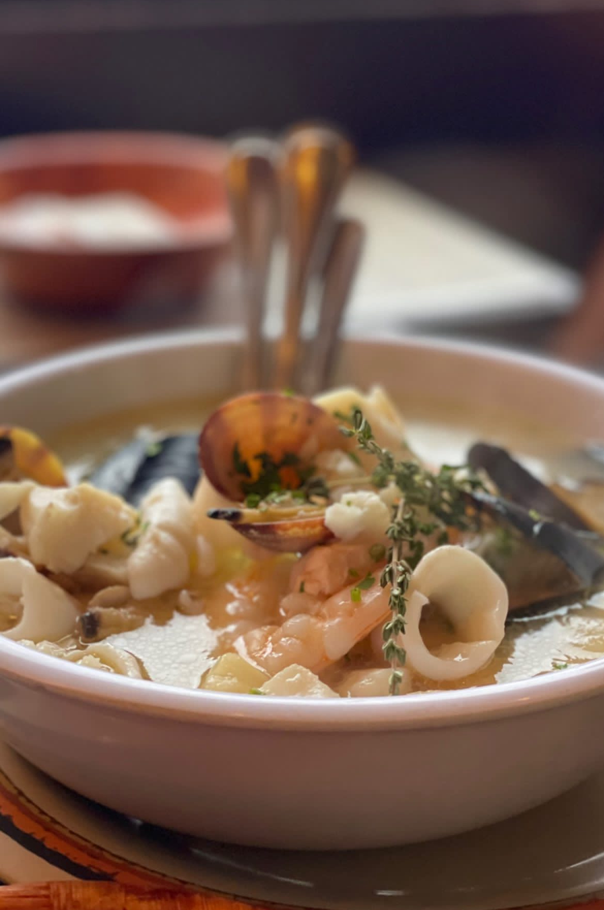

Growing up in California, I cherished almost every summer and winter spent in Seattle from the time I was nine years old. These seasonal trips were a vibrant part of my childhood, enriching my life with experiences in both cities. Whenever I think of Seattle, I can’t help but smile softly. It was there, in that city of ever changing skies and drizzling rain, that so much of my childhood unfolded. My two older sisters lived there, and they were my first real teachers about life, food, and adventure. They introduced me to flavors and experiences I’d never known.We’d try every food spot they loved, from the freshest local seafood like sushi, oysters, and crab, to beloved local favorites where Seattle's true culinary spirit shines, a true taste of the city’s vibrant food scene.
But our explorations weren’t just about food. Seattle was where I first learned to push my limits. My sisters took me kayaking at Gas Works Park, city viewing at Alki Beach, where the horizon stretched forever. They took me on my first real outdoor adventure too, backpacking 20 miles with no experience, camping in the wilds of the Alpine Wilderness, and exploring the vast expanses of Olympic National Park. I remember feeling so small under the immense, star filled sky, and being next to big wild brown bears yet somehow it was exactly where I belonged.
These adventures sparked something in me, a love for exploring that I carried into my solo trips. I ventured to majestic places like Mt. Rainier, each visit making me feel more connected to Washington, this place that became my second home. One of my favorite escapes has always been Leavenworth, the cute Bavarian village tucked away in the mountains. The lush greenery there, the quiet strength of the mountains, always bring a sense of peace that’s hard to find anywhere else. And I’ll never forget the ferry rides to the San Juan Islands during lavender season. The air, filled with the sweet scent of lavender, made those trips feel almost magical.
Living between these two beautiful states, I’ve found a balance of sun and rain, of calm and adventure. Washington, with all its natural beauty and the memories of every summer and Christmas spent there, holds a big piece of my heart. It’s a place of first adventures, first leaps into the unknown, and a place I return to when I long for the feeling of home. Thanks for walking through these cherished memories with me. I feel truly blessed, each trip, each taste, and every burst of laughter has been a gift from my family, especially my sisters, who showed me the real love and beauty that Washington has to offer.
 }})